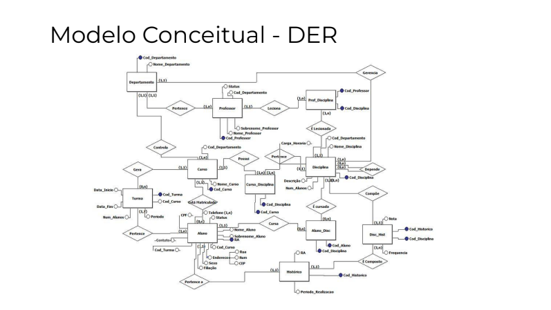
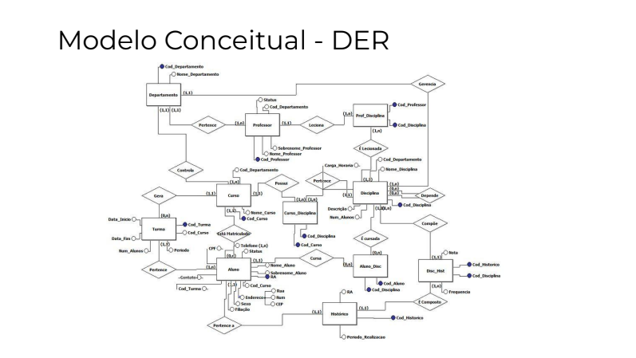

Oferecemos serviços de programação em diversas linguagens e trabalhamos com bancos de dados relacionais:
MySQL e Redes
O que é uma rede de computadores?
Em termos simples, uma rede de computadores é um conjunto de dispositivos eletrônicos (como computadores, smartphones, tablets, etc.) interligados, capazes de compartilhar informações e recursos. Imagine uma teia onde cada nó é um dispositivo e as linhas são as conexões.
Compartilhamento de recursos: Impressoras, arquivos, internet, etc. podem ser acessados por diversos dispositivos.
Comunicação: E-mails, mensagens instantâneas, videoconferências, tudo isso é possível através das redes. Acesso à informação: A internet, a maior rede mundial, conecta bilhões de dispositivos e pessoas.
 
